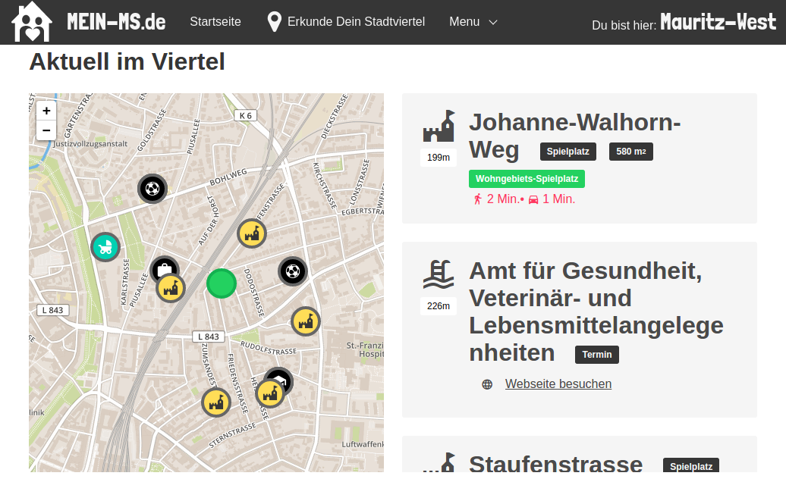
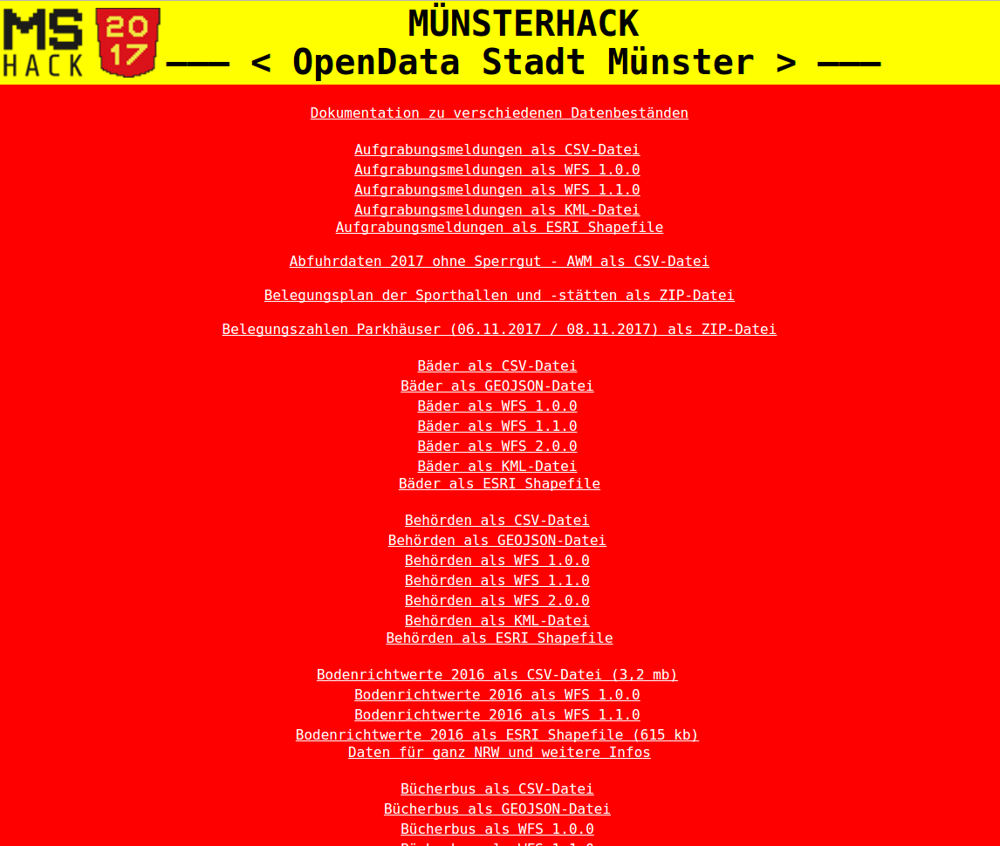

mein-ms.de
Offene Daten für Münsters Bürger
Vortrag zum Open Data Day 2018
@toms_rocket / Thomas Werner
Mit den Pfeiltasten ← ↑ → ↓ kann die Präsentation gesteuert werden
Inhalt
- Worum geht es?
- Die Idee
- So geht es weiter
- Mitmachen
Die Internetseite
www.mein-ms.de

Was kann das?
- Zeigt "Offene Datensätze" der Stadt Münster an
Wie funktioniert es?
- Internetseite, erkennt wo man sich gerade befindet
- Zeigt Interessantes aus der Umgebung: Aktuelle Baustellen, Spielplätze, ..
- Außerdem: Recherchefunktion - Suchmöglichkeit nach spezifischen Themen, z.B. Glascontainer, Bibliotheken, öffentliche Toiletten, ..
2017 - Stadt Münster bekommt "Open Data"-Sponsoring vom Land
- Aufruf an die Bürger, Ideen zu sammeln, welche Informationen aus der Stadtverwaltung veröffentlicht werden könnten.
- Veranstaltung eines Hackathon (Programmierwettbewerb)
Die von der Stadt veröffentlichten Datensätze

Mehr Datensätze
- Stillräume
- Wickelplätze
- Glascontainer
"Dynamische" Datensätze
- Termine
- evtl. Nachrichten
- Baustellen
Projekt-Informationen
- Außschließlich ehrenamtlich
- Programmcode "Open Source"
- Datenquellen relativ einfach zu integrieren
Technisches
- HTML "responsive"
- React.js
- Elasticsearch
- CSS Framework "Bulma.io"
Weiterführende Ideen
- Kommerzielle Verwertung?
- Redaktionelle Inhalte?
- ...Mitmachen!
Ideen Bürgerworkshop
- Defibrillatoren
- Weihnachtsmarktstände
- Grillplätze
- Mobilität: E-Ladesäulen, Fahrradausleihe, Carsharing, Parken
- Barrierefreie ÖPNV-Haltestellen
{kind=link}